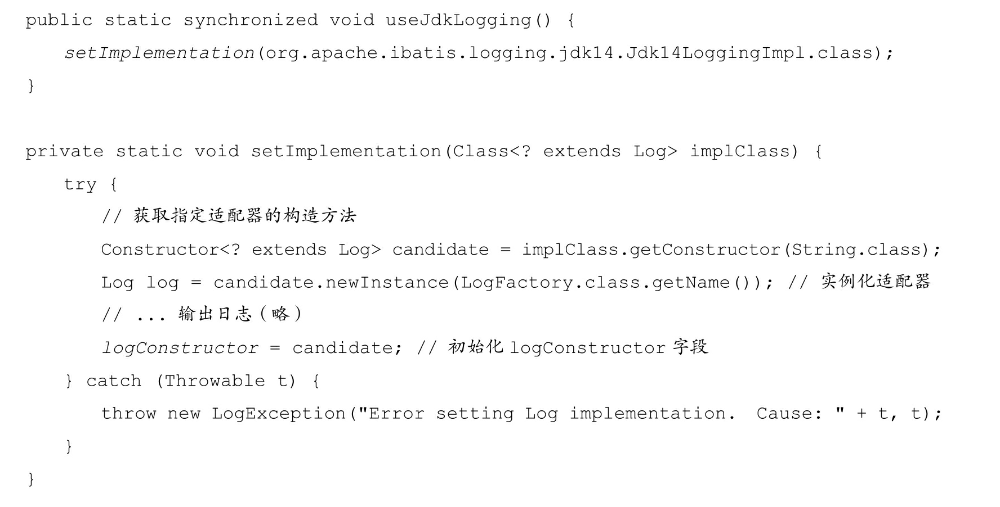
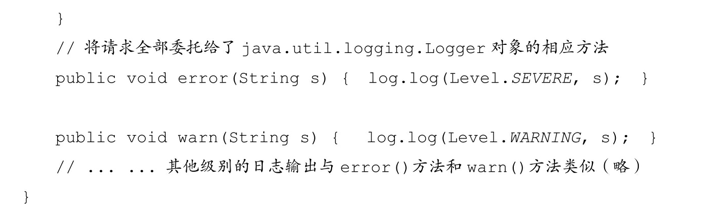
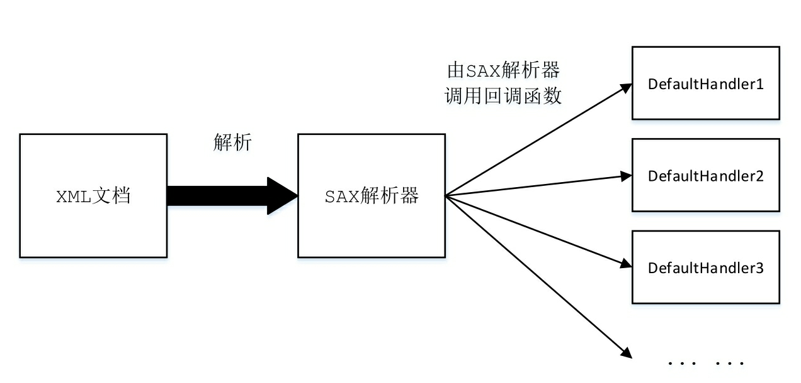
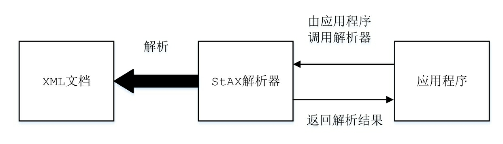
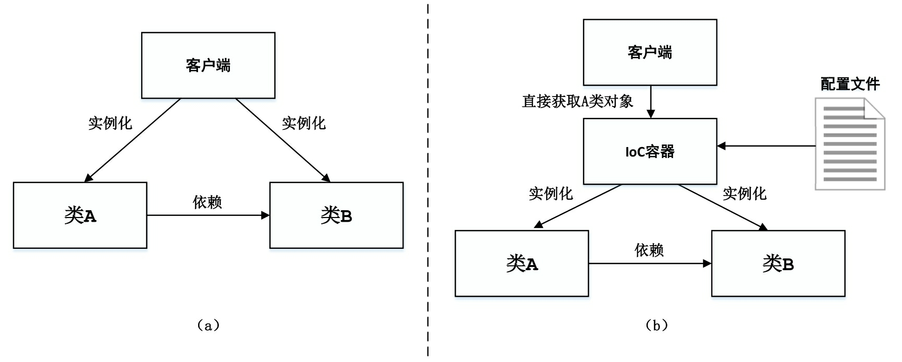

本文将全局介绍 MyBatis 的整体架构。
参考：
《MyBatis技术内幕》
MyBatis整体架构

基础支持层
反射模块
该模块对Java原生的反射进行了良好的封装，提供了更加简洁易用的API，方便上层使调用，并且对反射操作进行了一系列优化，例如缓存了类的元数据，提高了反射操作的性能。
类型转换模块
MyBatis为简化配置文件提供了别名机制，该机制是类型转换模块的主要功能之一。类型转换模块的另一个功能是实现JDBC类型与Java类型之间的转换，该功能在为SQL语句绑定实参以及映射查询结果集时都会涉及。在为SQL语句绑定实参时，会将数据由Java类型转换成JDBC类型；而在映射结果集时，会将数据由JDBC类型转换成Java类型。

TypeHandler
setParameter(): 将数据由JdbcType类型转换成Java类型
getResult(): 将数据由Java类型转成JdbcType
TypeHandler的实现子类：
IntegerTypeHandler实现：
TypeHandlerRegistry

除了MyBatis本身提供的TypeHandler实现，我们也可以添加自定义的TypeHandler接口实现，添加方式是在mybatis-config.xml配置文件中的＜typeHandlers＞节点下，添加相应的＜typeHandler＞节点配置，并指定自定义的TypeHandler接口实现类。在MyBatis初始化时会解析该节点，并将该TypeHandler类型的对象注册到TypeHandlerRegistry中，供MyBatis后续使用。
TypeAliasRegistry
MyBatis可以为一个类添加一个别名，之后就可以通过别名引用该类。 MyBatis通过TypeAliasRegistry类完成别名注册和管理的功能，TypeAliasRegistry的结构比较简单，它通过TYPE_ALIASES字段（Map＜String, Class＜？＞＞类型）管理别名与Java类型之间的对应关系，通过TypeAliasRegistry.registerAlias（）方法完成注册别名。
日志模块
MyBatis作为一个设计优良的框架，除了提供详细的日志输出信息，还要能够集成多种日志框架，其日志模块的一个主要功能就是集成第三方日志框架。
日志适配器

Log接口定义了日志模块功能，LogFactory工厂类负责创建对应的日志组件适配器。在LogFactory类加载时会执行其静态代码块，其逻辑是按序加载并实例化对应日志组件的适配器，然后使用LogFactory.logConstructor这个静态字段，记录当前使用的第三方日志组件的适配器。



Jdbc调试

使用了代理模式，

资源加载模块
资源加载模块主要是对类加载器进行封装，确定类加载器的使用顺序，并提供了加载类文件以及其他资源文件的功能。单例模式。
解析器模块
解析器模块的主要提供了两个功能：一个功能是对XPath进行封装，为MyBatis初始化时解析mybatis-config.xml配置文件以及映射配置文件提供支持；另一个功能是为处理动态SQL语句中的占位符提供支持。
XML处理方式
- DOM
DOM是基于树形结构的XML解析方式，它会将整个XML文档读入内存并构建一个DOM树，基于这棵树形结构对各个节点（Node）进行操作。XML 文档中的每个成分都是一个节点：整个文档是一个文档节点，每个XML标签对应一个元素节点，包含在XML标签中的文本是文本节点，每一个 XML 属性是一个属性节点，注释属于注释节点。

经过DOM解析后得到的树形结构如下：

- SAX
SAX是基于事件模型的XML解析方式，它并不需要将整个XML文档加载到内存中，而只需将XML文档的一部分加载到内存中，即可开始解析，在处理过程中并不会在内存中记录XML中的数据，所以占用的资源比较小。当程序处理过程中满足条件时，也可以立即停止解析过程，这样就不必解析剩余的XML内容。

- StAX

XPath
XPath之于XML就好比SQL语言之于数据库。
XPath中常用的表达式：
查找所有书籍的XPath表达式是：”//book”。
查找作者为Neal Stephenson的所有图书需要指定＜author＞节点的值，得到表达式：”//book[author=’Neal Stephenson’]”。
为了找出这些图书的标题，需要选取＜title＞节点，得到表达式：”//book[author=’Neal Stephenson’]/title”。
最后，真正需要的信息是＜title＞节点中的文本节点，得到的完整XPath表达式是：”//book[author=”Neal Stephenson”]/title/text（）”。
XPathParser

数据源模块
现在开源的数据源都提供了比较丰富的功能，例如，连接池功能、检测连接状态等，选择性能优秀的数据源组件对于提升ORM框架乃至整个应用的性能都是非常重要的。MyBatis自身提供了相应的数据源实现，当然MyBatis也提供了与第三方数据源集成的接口，这些功能都位于数据源模块之中。


事务模块
MyBatis对数据库中的事务进行了抽象，其自身提供了相应的事务接口和简单实现。在很多场景中，MyBatis会与Spring框架集成，并由Spring框架管理事务，
JdbcTransaction依赖于JDBC Connection控制事务的提交和回滚。

缓存模块
在优化系统性能时，优化数据库性能是非常重要的一个环节，而添加缓存则是优化数据库时最有效的手段之一。正确、合理地使用缓存可以将一部分数据库请求拦截在缓存这一层，这就能够减少相当一部分数据库的压力。MyBatis中提供了一级缓存和二级缓存，而这两级缓存都是依赖于基础支持层中的缓存模块实现的。这里需要读者注意的是，MyBatis中自带的这两级缓存与MyBatis以及整个应用是运行在同一个JVM中的，共享同一块堆内存。如果这两级缓存中的数据量较大，则可能影响系统中其他功能的运行，所以当需要缓存大量数据时，优先考虑使用Redis、Memcache等缓存产品。

装饰器模式
Binding模块
开发人员无须编写自定义Mapper接口的实现，MyBatis会自动为其创建动态代理对象。在有些场景中，自定义Mapper接口可以完全代替映射配置文件，但有的映射规则和SQL语句的定义还是写在映射配置文件中比较方便，例如动态SQL语句的定义。
Mapper接口
核心处理层
配置解析
在MyBatis初始化过程中，会加载mybatis-config.xml配置文件、映射配置文件以及Mapper接口中的注解信息，解析后的配置信息会形成相应的对象并保存到Configuration对象中。例如，示例中定义的＜resultMap＞节点（即ResultSet的映射规则）会被解析成ResultMap对象；示例中定义的＜result＞节点（即属性映射）会被解析成ResultMapping对象。之后，利用该Configuration对象创建SqlSessionFactory对象。待MyBatis初始化之后，开发人员可以通过初始化得到SqlSessionFactory创建SqlSession对象并完成数据库操作。
建造者模式
BaseBuilder
1 | // All-In-One配置对象 |
XMLConfigBuilder
负责解析 mybatis-config.xml 文件
解析
节点
生成 java.util.Properties 对象，设置到 XPathParser 和 Configuration 的 variables 字段中。解析
节点
MyBatis全局性配置，如解析
、 节点 解析
节点
插件是MyBatis提供的扩展机制之一，用户可以通过添加自定义插件在SQL语句执行过程中的某一点进行拦截。MyBatis中的自定义插件只需要实现Interceptor接口。
Configuration 的 interceptorChain 字段。解析
节点 解析
节点
在实际生产中，同一项目可能分为开发、测试和生产多个不同的环境，每个环境的配置可能不尽相同，每个节点对应一种环境的配置。
根据 XMLConfigBuilder.environment 字段值确定要使用的配置，之后创建对应的 TransactionFactory 和 DataSource 对象，并封装进 Environment 对象中。 解析
节点
告诉 MyBatis 去哪些位置查找映射配置文件以及使用了配置注解标识的接口。会创建 XMLMapperBuilder 加载映射文件，加载相应的Mapper接口，解析其中的注解并完成向 MapperRegistry 的注册。
XMLMapperBuilder
负责解析 mapper.xml 文件
解析
节点 解析
节点 解析
节点
定义了结果集与结果对象之间的映射规则。解析
节点
定义了可重用的SQL语句片段。
XMLStatementBuilder
负责解析定义的SQL语句。
1 | // 节点中的id属性（包括命名空间前缀） |
解析
节点
在解析SQL节点之前，首先通过XMLIncludeTransformer 解析SQL语句中节点，该过程会将 节点替换成 节点中定义的SQL片段，并将其中的${}占位符替换成真实的参数，可能涉及多层递归。 1
2
3
4
5
6
7
8
9
10<include id="someinclude">
from ${tablename}
</include>
<select id="" resultType="">
select B.id as blog_id,B.title as blog_title,B.author_id as blog_author_id
<include refid="someinclude">
<property name="tablename" value="Blog"/>
</include>
</select>
解析
节点 解析 SQL 节点
绑定Mapper接口
每个映射配置文件中的命名空间可以绑定一个Mapper接口，并注册到 MapperRegistry 中。在 XMLMapperBuilder.bindMapperForNamespace()中完成。
SQL解析与scripting模块
拼凑SQL语句是一件烦琐且易出错的过程，为了将开发人员从这项枯燥无趣的工作中解脱出来，MyBatis实现动态SQL语句的功能，提供了多种动态SQL语句对应的节点，例如，＜where＞节点、＜if＞节点、＜foreach＞节点等。通过这些节点的组合使用，开发人员可以写出几乎满足所有需求的动态SQL语句。 MyBatis中的scripting模块会根据用户传入的实参，解析映射文件中定义的动态SQL节点，并形成数据库可执行的SQL语句。之后会处理SQL语句中的占位符，绑定用户传入的实参。
组合模式。
SQL执行
SQL语句的执行涉及多个组件，其中比较重要的是Executor、StatementHandler、ParameterHandler和ResultSetHandler。Executor主要负责维护一级缓存和二级缓存，并提供事务管理的相关操作，它会将数据库相关操作委托给StatementHandler完成。StatementHandler首先通过ParameterHandler完成SQL语句的实参绑定，然后通过java.sql.Statement对象执行SQL语句并得到结果集，最后通过ResultSetHandler完成结果集的映射，得到结果对象并返回。
模板模式。

插件
接口层
接口层相对简单，其核心就是SqlSession接口，该接口中定义了MyBatis暴露给应用程序调用的API，也就是上层应用与MyBatis交互的桥梁。
接口层在接收到调用请求时，会调用核心处理层的相应模块来完成具体的数据库操作。
策略模式。
Spring问题
IoC 控制反转

类A和类B的依赖关系通过配置文件告诉IoC容器，由IoC容器创建对象A和对象B并维护两者之间的关系，客户在使用对象A时，可以直接从IoC容器中获取。
BeanFactory 与 ApplicationContext 的区别
都可以当作 Spring 容器，其中 ApplicationContext 是 BeanFactory 的字接口。
BeanFactory：是 Spring 里面最底层的接口，包含了各种Bean的定义，读取bean配置文件，管理bean的加载、实例化，控制bean的生命周期，维护bean之间的依赖关系。
ApplicationContext：
作为 BeanFactory 的派生，除了提供 BeanFactory 所具有的功能外，还提供了更完整的框架功能：- 继承 MessageSource，因此支持国际化
- 统一的资源文件访问方式
- 提供在监听器中注册bean的事件
- 同时加载多个配置文件
- 载入多个（有继承关系）上下文，使得每一个上下文都专注于一个特定的层次，比如应用的web层
BeanFactory：采用的是延迟加载形式来注入 Bean 的，即只有在使用到某个Bean时（调用getBean()），才对该 Bean 进行加载实例化。这样，我们就不能发现一些存在的Spring配置问题。如果Bean的某一个属性没有注入，BeanFactory加载后，直到第一次使用调用getBean方法才会抛出异常。
ApplicationContext：在容器启动时，一次性创建了所有bean。这样，在容器启动时，就可以发现Spring中存在的配置错误，这样有利于检查所依赖属性是否注入。ApplicationContext 启动后预载入所有的单实例 Bean。ApplicationContext 唯一的不足是占用内存空间，当应用程序配置bean较多时，程序启动较慢。BeanFactory 通常以编程的方式被创建，ApplicationContext 还能以声明的方式创建，如使用ContextLoader。
BeanFactory 和 ApplicationContext 都支持 BeanPostProcessor、BeanFactoryPostProcessor的使用，但两者之间的区别是：BeanFactory 需要手动注册，而 ApplicationContext 是自动注册的。
refresh 函数中包含了几乎 ApplicationContext 中提供的全部功能，而且此函数中逻辑非常清晰明了：
1 |
|
Bean 的生命周期
首先说说一下Servlet的生命周期：实例化，初始init，接收请求service，销毁destory。Spring 上下文中的Bean生命周期也类似：
- 实例化Bean
对于 BeanFactory 容器，当客户向容器请求一个尚未初始化的bean时，或初始化bean的时候需要注入另一个尚未初始化的依赖时，容器就会调用createBean进行实例化。
对于 ApplicationContext 容器，当容器启动结束后，通过获取 BeanDefinition 对象中的信息，实例化所有的bean。
- 设置对象属性（依赖注入）
实例化后的对象被封装在 BeanWrapper 对象中，紧接着，Spring 根据 BeanDefinition 中的信息以及通过 BeanWrapper 提供的设置属性的接口完成依赖注入。
- 处理Aware接口
BeanFactoryAware、ApplicationContextAware、ResourceLoaderAware、ServletContextAware等
①如果这个Bean已经实现了BeanNameAware接口，会调用它实现的setBeanName(String beanId)方法，此处传递的就是Spring配置文件中Bean的id值；
②如果这个Bean已经实现了BeanFactoryAware接口，会调用它实现的setBeanFactory()方法，传递的是Spring工厂自身。
③如果这个Bean已经实现了ApplicationContextAware接口，会调用setApplicationContext(ApplicationContext)方法，传入Spring上下文
- BeanPostProcessor的before
对Bean初始化前的一些自定义前置处理
- init-method
激活自定义的init方法，如果Bean在Spring配置文件中配置了init-method属性，则会自动调用其配置的初始化方法。
- BeanPostProcessor的after
对Bean初始化后的一些自定义后置处理。此时，Bean已经被正确创建了，可以使用了。
- DisposableBean
Sprin中不但提供了对于初始化方法的扩展入口，同样也提供了销毁方法的扩展入口，除了熟知的配置属性 destory-method 外，用户还可以注册后处理器 DestructionAwareBeanPostProcessor 来统一处理 bean 的销毁方法。
当Bean不再需要时，会经过清理阶段，如果Bean实现了DisposableBean这个接口，会调用其实现的destroy()方法；
- destory-method
最后，如果这个Bean的Spring配置中配置了destroy-method属性，会自动调用其配置的销毁方法。
autowiring 的实现原理
自动装配，减少用户配置Bean的工作量。对属性 autowire 的处理是 populateBean 处理过程的一部分，在处理一般的Bean之前，先对 autowiring 属性进行处理。
autowire_by_name，autowire_by_type
在Spring框架xml配置中有5种自动装配：
- no：默认的方式是不进行自动装配的，通过手工设置ref属性来进行装配bean
- byName：通过bean的名称进行自动装配，如果一个bean的property与另一个bean的name相同，就进行自动装配
- byType：通过参数的数据类型进行自动装配
- constructor：利用构造函数进行装配，并且构造函数的参数通过byType进行装配。
- autodetect：自动探测，如果有构造方法，通过construct的方式自动装配，否则使用byType的方式自动装配
基于注解的方式：
使用@Autowired注解来自动装配指定的bean，需要在Spring配置文件中进行配置，context:annotation-config/。
在启动Spring IOC时，容器自动装载了一个 AutowiredAnnotationBeanPostProcessor 处理器，当容器扫描到@Autowired、@Resource、@Inject 时，就会在Ioc容器自动查找需要的bean
,并装配该对象的属性。
在使用@Autowired的时候，首先在容器中查询对应类型的bean：
如果查询的结果刚好为一个，就将该bean装配给@Autowired指定的数据；
如果查询的结果不止一个，那么@Autowired会根据名称来查找；
如果上述查找的结果为空，那么会抛出异常，解决办法是使用required=false
@Autowired可用于：构造函数、成员变量、Setter方法
@Autowired 和 @Resource 之间的区别：
- @Autowired 默认是按照类型装配注入的，默认情况下它要求依赖对象必须存在（可以设置它的属性为false）
- @Resource 默认是按名称装配注入的，只有当找不到与名称匹配的bean才会按照类型来装配注入
Spring支持的几种bean的作用域
- singleton：默认，每个容器中只有一个bean的实例，单例的模式由BeanFactory自身来维护
- prototype：为每一个bean请求提供一个实例
- request：为每一个网络请求创建一个实例，在请求完成以后，bean会失效并被垃圾回收器回收
- session：与request范围类似，确保每个 session 中有一个bean的实例，在 session 过期后，bean 会随之失效
- global-session：全局作用域，global-session 和 Portlet 应用相关。当应用部署在 Portlet 容器中工作时，它包含很多 portlet。如果你想要声明让所有的portlet共用全局的存储变量的话，那么这全局变量需要存储在global-session中。全局作用域与Servlet中的session作用域效果相同。
AOP

- Advice通知
定义在连接点做什么，为切面增强提供织入接口。
MethodBeforeAdvice.before()
AfterReturningAdvice.afterReturning()
ThrowsAdvice.afterThrowing()
- Pointcut切点
需要增强的地方可以是被某个正则表达式进行标识，或根据某个方法名进行匹配等。
在面向对象编程 OOP 中，开发人员可以通过封装、继承、多态等概念建立对象的层次结构。
在系统中，除了核心的业务逻辑，还会有权限检测、日志输出、事务管理等相关的代码，它们会散落在多个对象中，横跨整个对象层次结构，但是这些功能与核心业务逻辑并无直接关系。
AOP利用“横切”技术将那些影响了多个类的公共代码抽取出来，封装到一个可重用的模块中，并将其称为Aspect（切面）。
这样就可以减少重复的代码，降低模块之间的耦合度，提高了系统的可维护性。
AOP实现的关键在于代理模式，AOP代理主要分为静态代理和动态代理。
静态代理的代表为 AspectJ ，动态代理则以 Spring AOP 为代表：
AspectJ 是静态代理的增强，所谓静态代理，就是 AOP 框架会在编译阶段生成 AOP 代理类，因此也称为编译时增强，它会在编译阶段将 AspectJ(切面) 织入到Java字节码中，运行的时候就是增强之后的AOP对象。
Spring AOP 使用的是动态代理，所谓的动态代理就是说 AOP 框架不会去修改字节码，而是每次运行时在内存中临时为方法生成一个 AOP 对象，这个 AOP 对象包含了目标对象的全部方法，并且在特定的
切点做了增强处理，并回调原对象的方法。
Spring AOP 中的动态代理主要有两种方式，JDK动态代理和CGLIB动态代理：
- JDK 动态代理只提供接口的代理，不支持类的代理。核心 InvocationHandler 接口和 Proxy 类，InvocationHandler 通过 invoke() 方法反射来调用目标类中的代码，动态地将横切逻辑和业务编织在一起；接着，Proxy 利用 InvocationHandler 动态创建一个符合某一接口的实例，生成目标类的代理对象。
InvocationHandler 的 invoke(Object proxy, Method method, Object[] args)：
proxy是最终生成的代理实例；
method是被代理目标实现的某个具体方法；
args是被代理目标实现的某个方法的具体入参，在方法反射调用时使用。
- 如果代理类没有实现 InvocationHandler 接口，那么 Spring AOP 会选择使用 CGLIB 来动态代理目标类。CGLIB（Code Generation Library），是一个代码生成的类库，可以在运行时动态的生成指定类的一个子类对象，并覆盖其中特定方法并增加增强代码，从而实现AOP。CGLIB 是通过继承的方式做的动态代理，因此如果某个类被标记为final，那么它是无法使用CGLIB做动态代理的。
- 静态代理与动态代理区别在于生成 AOP 代理对象的时机不同，相对来说 AspectJ 的静态代理方式具有更好的性能，但是 AspectJ 需要特定的编译器进行处理，而 Spring AOP 则无需特定的编译器处理。
SpringMVC

- 用户发送请求至前端控制器 DispatcherServlet
- DispatcherServlet 收到请求调用处理器映射器 HandlerMapping
- 处理器映射器根据请求 url 找到具体的处理器，生成处理器执行链 HandlerExecutionChain (包括处理器对象和处理器拦截器) 一并返回给 DispatcherServlet
- DispatcherServlet 根据处理器 Handler 获取处理器适配器 HandlerAdapter 执行 HandlerAdapter 处理一系列操作，如：参数封装、数据格式转换、数据验证等操作
- 执行处理器Handler（Controller，也叫页面控制器）
- Handler 执行完返回 ModelAndView
- HanlerAdapter 将 Handler 执行结果 ModeAndView 返回到 DispatcherServlet
- DispatcherServlet 将 ModelAndView 传给 ViewResolver 视图解析器
- ViewResolver 解析后返回具体 View
- DispatcherServlet 对 View 进行渲染视图（即将模型数据model填充至视图中）
- DispatcherServlet 响应用户
Spring事务实现
Spring事务的本质其实就是数据库对事务的支持，没有数据库的事务支持，spring是无法提供事务功能的。真正的数据库层的事务提交和回滚是通过binlog或者redo log实现的。
Spring事务的种类
- 编程式事务管理使用 TransactionTemplate
- @Transactional 声明式事务管理建立在AOP之上的，对方法前后进行拦截，将事务处理的功能编织到拦截的方法中，在目标方法开始之前加入一个事务，在执行完目标方法之后根据执行情况提交或者回滚事务。
Spring的事务传播行为
Spring 事务的传播行为说的是，当多个事务同时存在的时候，Spring 如何处理这些事务的行为。
PROPAGATION_REQUIRED：如果当前没有事务，就创建一个新事务，如果当时存在事务，就加入该事务，该设置是最常用的设置。
PROPAGATION_SUPPORTS：支持当前事务，如果当前存在事务，就加入该事务，如果当前不存在事务，就以非事务执行。
PROPAGATION_MANDATORY：支持当前事务，如果当前存在事务，就加入该事务，如果当前不存在事务，就抛出异常。
PROPAGATION_REQUIRES_NEW：创建新事务，无论当前存不存在事务，都创建新事务。
PROPAGATION_NOT_SUPPORTED：以非事务方式执行操作，如果当前存在事务，就把当前事务挂起。
PROPAGATION_NEVER：以非事务方式执行，如果当前存在事务，则抛出异常。
PROPAGATION_NESTED：如果当前存在事务，则在嵌套事务内执行。如果当前没有事务，则按 required 属性执行。
Spring中的隔离级别
ISOLATION_DEFAULT：这是个 PlatfromTransactionManager 默认的隔离级别，使用数据库默认的事务隔离级别。
ISOLATION_READ_UNCOMMITTED：读未提交，允许另外一个事务可以看到这个事务未提交的数据。
ISOLATION_READ_COMMITTED：读已提交，保证一个事务修改的数据提交后才能被另一事务读取，而且能看到该事务对已有记录的更新。
ISOLATION_REPEATABLE_READ：可重复读，保证一个事务修改的数据提交后才能被另一事务读取，但是不能看到该事务对已有记录的更新。
ISOLATION_SERIALIZABLE：一个事务在执行的过程中完全看不到其他事务对数据库所做的更新。
Spring 框架中的不同类型的事件
Spring 提供了5种标准的事件：
上下文更新事件（ContextRefreshedEvent）：在调用 ConfigurableApplicationContext 接口中的refresh()方法时被触发。
上下文开始事件（ContextStartedEvent）：当容器调用 ConfigurableApplicationContext 的 start() 方法开始/重新开始容器时触发该事件。
上下文停止事件 (ContextStoppedEvent)：当容器调用 ConfigurableApplicationContext 的 stop() 方法开始/重新开始容器时触发该事件。
上下文关闭事件（ContextClosedEvent）：当ApplicationContext被关闭时触发该事件。容器被关闭时，其管理的所有单例Bean都被销毁。
请求处理事件（RequestHandledEvent）：在Web应用中，当一个http请求（request）结束触发该事件。
如果一个bean实现了ApplicationListener接口，当一个ApplicationEvent 被发布以后，bean会自动被通知。
DI 依赖注入
对象之间的依赖关系是由容器在运行期决定的，也就是说，由容器动态地确定并维持两个对象之间的某个依赖关系。通过依赖注入机制，开发人员只需要通过简单的配置（XML或注解），就可以确定依赖关系，实现组件的重用。
SpringBoot问题
什么是 SpringBoot ？
SpringBoot 是 Spring 开源组织下的子项目，是 Spring 组件一站式解决方案，主要简化了使用 Spring 的难度，简省了繁重的配置，提供了各种启动器，开发者能快速上手。
为什么要用 SpringBoot ？
- 独立运行
- 简化配置
- 自动配置
- 无代码生成和XML配置
- 应用监控
- 上手容易
SpringBoot组件
| 名称 | 描述 |
|---|---|
| spring-boot-starter | 核心 Spring Boot starter，包括自动配置支持，日志和 YAML |
| spring-boot-starter-actuator | 生产准备的特性，用于帮我们监控和管理应用 |
| spring-boot-starter-amqp | 对”高级消息队列协议”的支持，通过 spring-rabbit 实现 |
| spring-boot-starter-aop | 对面向切面编程的支持，包括 spring-aop 和 AspectJ |
| spring-boot-starter-batch | 对 Spring Batch 的支持，包括 HSQLDB 数据库 |
| spring-boot-starter-cloudconnectors | 对 Spring Cloud Connectors 的支持，简化在云平台下（例如，Cloud Foundry 和 Heroku）服务的连接 |
| spring-boot-starter-dataelasticsearch | 对 Elasticsearch 搜索和分析引擎的支持，包括 spring-data-elasticsearch |
| spring-boot-starter-datagemfire | 对 GemFire 分布式数据存储的支持，包括 spring-data-gemfire |
| spring-boot-starter-data-jpa | 对”Java 持久化 API”的支持，包括 spring-data-jpa，spring-orm 和 Hibernate |
| spring-boot-starter-datamongodb | 对 MongoDB NOSQL 数据库的支持，包括 spring-data-mongodb |
| spring-boot-starter-data-rest | 对通过 REST 暴露 Spring Data 仓库的支持，通过 spring-data-rest-webmvc 实现 |
| spring-boot-starter-data-solr | 对 Apache Solr 搜索平台的支持，包括 spring-data-solr |
| spring-boot-starter-freemarker | 对 FreeMarker 模板引擎的支持 |
| spring-boot-starter-groovytemplates | 对 Groovy 模板引擎的支持 |
| spring-boot-starter-hateoas | 对基于 HATEOAS 的 RESTful 服务的支持，通过 spring-hateoas 实现 |
| spring-boot-starter-hornetq | 对”Java 消息服务 API”的支持，通过 HornetQ 实现 |
| spring-boot-starter-integration | 对普通 spring-integration 模块的支持 |
| spring-boot-starter-jdbc | 对 JDBC 数据库的支持 |
| spring-boot-starter-jersey | 对 Jersey RESTful Web 服务框架的支持 |
| spring-boot-starter-jta-atomikos | 对 JTA 分布式事务的支持，通过 Atomikos 实现 |
| spring-boot-starter-jta-bitronix | 对 JTA 分布式事务的支持，通过 Bitronix 实现 |
| spring-boot-starter-mail | 对 javax.mail 的支持 |
| spring-boot-starter-mobile | 对 spring-mobile 的支持 |
| spring-boot-starter-redis | 对 REDIS 键值数据存储的支持，包括 spring-redis |
| spring-boot-starter-security | 对 spring-security 的支持 |
| spring-boot-starter-socialfacebook | 对 spring-social-facebook 的支持 |
| spring-boot-starter-sociallinkedin | 对 spring-social-linkedin 的支持 |
| spring-boot-starter-socialtwitter | 对 spring-social-twitter 的支持 |
| spring-boot-starter-test | 对常用测试依赖的支持，包括 JUnit, Hamcrest 和 Mockito，还有 spring-test 模块 |
| spring-boot-starter-thymeleaf | 对 Thymeleaf 模板引擎的支持，包括和 Spring 的集成 |
| spring-boot-starter-velocity | 对 Velocity 模板引擎的支持 |
| spring-boot-starter-web | 对全栈 web 开发的支持， 包括 Tomcat 和 spring-webmvc |
| spring-boot-starter-websocket | 对 WebSocket 开发的支持 |
| spring-boot-starter-ws | 对 Spring Web 服务的支持 |
| spring-boot-starter-remote-shell | 添加远程 ssh shell支持 |
| spring-boot-starter-jetty | 导入 Jetty HTTP 引擎（作为 Tomcat 的替代） |
| spring-boot-starter-log4j | 对 Log4J 日志系统的支持 |
| spring-boot-starter-logging | 导入 Spring Boot 的默认日志系统 |
| spring-boot-starter-tomcat | 导入 Spring Boot 的默认 HTTP 引擎 |
| spring-boot-starter-undertow | 导入 Undertow HTTP 引擎（作为 Tomcat 的替代） |
Spring的启动流程

- 组装 SpringApplication
- resourceLoader：设置resourceload
- 设置 primarySources：可以把启动类加载进入Spring容器
- webApplicationType：判断当前 application 应该运行在什么环境下
- mainApplicationClass：找出main方法启动的class
执行 SpringApplication 的 run
- 获取 SpringApplicationRunListeners
从 META-INF/spring.factories 获取 SpringApplicationRunListeners 的集合，并依次调用 SpringApplicationRunListener 的 starting 方法，即最终调用 ApplicationListener 的 onApplicationEvent 方法，发布 springboot 启动事件
- prepareEnvironment（目前profile功能已经被maven取代了）
- ConfigurableEnvironment：代表两种意义：一种是profiles，用来描述哪些bean
definitions是可用的；一种是properties，用来描述系统的配置，其来源可能是配置文件、JVM属性文件、操作系统环境变量等等 - getOrCreateEnvironment()：根据webApplicationType创建不同的Environment
- configureEnvironment(XX)：通过configurePropertySources(environment, args)设置properties，通过configureProfiles(environment, args)设置profiles
- listeners.environmentPrepared(environment);发布environmentPrepared事件，即调用ApplicationListener的onApplicationEvent事件
- bindToSpringApplication：即把当前的environment和当前的springApplication绑定
- ConfigurationPropertySources.attach(environment)：将ConfigurationPropertySource放入environment的propertysource中的第一个
- createApplicationContext：创建Spring的容器
- 根据不同的 webApplicationType 设置不同的 contextClass (容器的class类型)，然后生成不同的容器实例对象
- 生成容器实例的时候，对于Kotlin类使用’primary’构造函数实例化一个类，如果不是就使用默认构造函数，根据得到构造函数生成实例对象，如果构造函数不是公共的，我们尝试去改变并访问
- prepareContext：准备容器，在准备刷新容器前准备好容器
- context.setEnvironment(environment)：设置spring容器的environment
- postProcessApplicationContext(context)：设置beanNameGenerator和resourceLoader
- applyInitializers(context)：调用ApplicationContextInitializer的initialize来初始化context，其中还检测各个ApplicationContextInitializer是否接受该类型的容器
- listeners.contextPrepared(context);即调用SpringApplicationRunListener的contextPrepared方法，但目前是个空实现。
- 分别注册springApplicationArguments和springBootBanner这两个bean
- getAllSources就是获取我们的primarySources和sources
- load(context, sources.toArray(new Object[0]))：首先创建BeanDefinitionLoader，设置该loader的sources，annotatedReader，xmlReader，scanner，以及添加scanner的ExcludeFilter（即过滤springboot的启动类），若用户启动的时候设置了beanNameGenerator，resourceLoader，environment的话就替代我们自身设置的属性。同时根据source的类型选择不同的load方法，这边我们是load（class），最终判断是否是component注解，是的话就通过annotatedReader将启动类注册成bean
- listeners.contextLoaded(context):首先判断ApplicationListener是否属于ApplicationContextAware，如果是的话就将spring容器赋值给该listener，然后将该ApplicationListener赋值给spring容器，然后调用ApplicationListener的onApplicationEvent方法
context.registerShutdownHook()：
注册一个线程，该线程主要指向doclose方法，doClose方法的逻辑就是：从applicationContexts集合中删除当前容器，MBeanServer卸载MBean，发布容器关闭事件，调用了实现了lifecycleProcessor接口的bean，destroyBeans，closeBeanFactory，onClose：关闭内置tomcat，active设置为falserefreshContext(context)：真正的刷新spring容器
- prepareRefresh():设置些初始的操作比如，开启激活，启动日期，初始化propertySource。
- 获取beanFactory
- prepareBeanFactory(beanFactory)：设置beanFactory的classloader，BeanExpressionResolver，PropertyEditorRegistrar，ApplicationContextAwareProcessor和忽略xxxxAware，注 册依赖，还有ApplicationListenerDetector
ApplicationContextAwareProcessor：只是将applicationContext传递给ApplicationContextAwareProcessor，方便后面的xxxAware调用
忽略xxxxAware：忽略这些Aware接口实现类中与接口set方法中入参类型相同的属性的的自动注入这样就保证了关键的类是由spring容器自己产生的而不是我们注入的，
自动注入不是指的@AutoWire 而是指的是beans的default-autowire=”byType” 或在bean的autowire=”byType” ，这样spring 回去ioc容器寻找类型相似的类型给其注入，如果实现了spring 的xxaware接口，就不会自动注入记载filterPropertyDescriptorsForDependencyCheck删除与入参类型相同的属性
注册依赖：即指定一些类自动注入的实例是spring指定的实例对象
ApplicationListenerDetector：检测实现了ApplicationListener的实现类，因为有些实现类，无法通过getBeanNamesForType获取到。 - postProcessBeanFactory(beanFactory)：继续设置ignoreDependencyInterface（ServletContextAware）还有annotatedClasses，basePackages如果存在就设置。
- invokeBeanFactoryPostProcessors(beanFactory)：从beanFactoryPostProcessors获取BeanFactoryPostProcessor，然后先执行BeanDefinitionRegistryPostProcessor类型的postProcessBeanDefinitionRegistry，继续从beanFactory获取BeanDefinitionRegistryPostProcessor类型的bean然后执行postProcessBeanDefinitionRegistry，执行的过程按照PriorityOrdered，Ordered，普通的类型进行执行，然后优先执行registryProcessors的postProcessBeanFactory在执行regularPostProcessors的postProcessBeanFactory，再从BeanFactory获取PriorityOrdered，Ordered，普通的类型三种类型的BeanFactoryPostProcessor，并按照顺序执行。总结：从之前加入的beanFactoryPostProcessor先执行postProcessBeanDefinitionRegistry（假如是BeanDefinitionRegistryPostProcessor）然后在执行postProcessBeanFactory方法，然后从beanFactory获取BeanFactoryPostProcessor 然后执行postProcessBeanFactory，执行过程中都要按照PriorityOrdered，Ordered，普通的类型三种类型的顺序执行。
- registerBeanPostProcessors：从beanFactory获取BeanPostProcessor分别按照PriorityOrdered，Ordered，普通的类型注册BeanPostProcessor
- BeanPostProcessor和BeanFactoryPostProcessor:前者是对bean初始化前后进行设置，后者可以对beanFactory进行修改 或者，可以对beanDefinition进行修改或者增加或者初始化渴望提前初始化的bean
- initMessageSource()：一般是我们用来初始化我们国际化文件的
- initApplicationEventMulticaster():设置applicationEventMulticaster，spring发布各种事件就依靠他，这个和springboot发布事件使用相同的类
- onRefresh()：初始化其他的子容器类中的bean，同时创建spring的内置tomcat，这在后期Springboot内嵌式tomcat中详细阐述
- registerListeners()：添加用户设置applicationListeners，然后从beanFactory获取ApplicationListener，然后发布需要earlyApplicationEvents事件
- finishBeanFactoryInitialization(beanFactory)：实例化非懒加载的剩余bean
- finishRefresh：清理资源缓存，初始化lifecycle，调用lifecycle的onrefresh，发布ContextRefreshedEvent的事件,激活JMX,启动tomcat
afterRefresh(context, applicationArguments)：目前是空实现
listeners.started(context)：发布started事件
callRunners(context, applicationArguments)
从 spring 容器中获取 ApplicationRunner 和 CommandLineRunner 对象，然后按照顺序排序，循环调用他们的run 方法
- handleRunFailure(context, ex, exeptionReporters, listeners)
处理不同的异常状态，然后调用 listeners.failed(context, exception)，并关闭spring容器
- listeners.running(context)：发布running事件
SpringCloud 问题
熔断、限流
MyBatis问题
什么是 Mybatis ?
（1）Mybatis是一个半ORM（对象关系映射）框架，它内部封装了JDBC，开发时只需要关注SQL语句本身，不需要花费精力去处理加载驱动、创建连接、创建statement等繁杂的过程。程序员直接编写原生态sql，可以严格控制sql执行性能，灵活度高。
（2）Mybatis 可以使用 XML 或注解来配置和映射原生信息，将 POJO映射成数据库中的记录，避免了几乎所有的 JDBC 代码和手动设置参数以及获取结果集。
（3）通过xml 文件或注解的方式将要执行的各种 statement 配置起来，并通过java对象和 statement中sql的动态参数进行映射生成最终执行的sql语句，最后由mybatis框架执行sql并将结果映射为java对象并返回。（从执行sql到返回result的过程）。
Mybatis的优点
（1）基于SQL语句编程，相当灵活，不会对应用程序或者数据库的现有设计造成任何影响，SQL写在XML里，解除sql与程序代码的耦合，便于统一管理；提供XML标签，支持编写动态SQL语句，并可重用。
（2）与JDBC相比，减少了50%以上的代码量，消除了JDBC大量冗余的代码，不需要手动开关连接；
（3）很好的与各种数据库兼容（因为MyBatis使用JDBC来连接数据库，所以只要JDBC支持的数据库MyBatis都支持）。
（4）能够与Spring很好的集成；
（5）提供映射标签，支持对象与数据库的ORM字段关系映射；提供对象关系映射标签，支持对象关系组件维护。
Mybatis的$和#的区别？
1）#{}是预编译处理，${}是字符串替换。
2）Mybatis在处理#{}时，会将sql中的#{}替换为?号，调用PreparedStatement的set方法来赋值；
3）Mybatis在处理${}时，就是把${}替换成变量的值。
4）使用#{}可以有效的防止SQL注入，提高系统安全性。
讲下Mybatis的缓存
Mybatis缓存分为一级缓存和二级缓存，一级缓存放在session里面，二级缓存放在它的命名空间里，默认是不打开的，使用二级缓存属性类需要实现Serializable序列化接口(可用来保存对象的状态)，可在它的映射文件中配置
Mybatis是如何分页的？分页插件的原理是什么？
1）Mybatis使用RowBounds对象进行分页，可以直接编写sql实现分页，也可以使用Mybatis的分页插件。
2）分页插件的原理：实现Mybatis提供的接口，实现自定义插件，在插件的拦截方法内拦截待执行的sql，然后重写sql。
举例：select * from student，拦截sql后重写为select t.* from (select * from student) t limit 0,10
简述Mybatis的运行原理，以及如何编写一个插件？
1）Mybatis仅可以编写针对ParameterHandler、ResultSetHandler、StatementHandler、Executor这4种接口的插件，Mybatis通过动态代理，为需要拦截的接口生成代理对象以实现接口方法拦截功能，每当执行这4种接口对象的方法时，就会进入拦截方法，具体就是InvocationHandler的invoke()方法，当然，只会拦截那些你指定需要拦截的方法。
2）实现Mybatis的Interceptor接口并复写intercept()方法，然后在给插件编写注解，指定要拦截哪一个接口的哪些方法即可，记住，别忘了在配置文件中配置你编写的插件。
Mybatis动态sql是做什么的？都有哪些动态sql？能简述一下动态sql的执行原理不？
1）Mybatis动态sql可以让我们在Xml映射文件内，以标签的形式编写动态sql，完成逻辑判断和动态拼接sql的功能。
2）Mybatis提供了9种动态sql标签：trim|where|set|foreach|if|choose|when|otherwise|bind。
3）其执行原理为，使用OGNL从sql参数对象中计算表达式的值，根据表达式的值动态拼接sql，以此来完成动态sql的功能。
简述Mybatis的Xml映射文件和Mybatis内部数据结构之间的映射关系？
Mybatis将所有Xml配置信息都封装到All-In-One重量级对象Configuration内部。在Xml映射文件中，
MyBatis中遇到的设计模式？
Builder模式，例如SqlSessionFactoryBuilder、XMLConfigBuilder、XMLMapperBuilder、XMLStatementBuilder、CacheBuilder；
工厂模式，例如SqlSessionFactory、ObjectFactory、MapperProxyFactory；
单例模式，例如ErrorContext和LogFactory；
代理模式，Mybatis实现的核心，比如MapperProxy、ConnectionLogger，用的jdk的动态代理；还有executor.loader包使用了cglib或者javassist达到延迟加载的效果；
组合模式，例如SqlNode和各个子类ChooseSqlNode等；
模板方法模式，例如BaseExecutor和SimpleExecutor，还有BaseTypeHandler和所有的子类例如IntegerTypeHandler；
适配器模式，例如Log的Mybatis接口和它对jdbc、log4j等各种日志框架的适配实现；
装饰者模式，例如Cache包中的cache.decorators子包中等各个装饰者的实现；
迭代器模式，例如迭代器模式PropertyTokenizer；